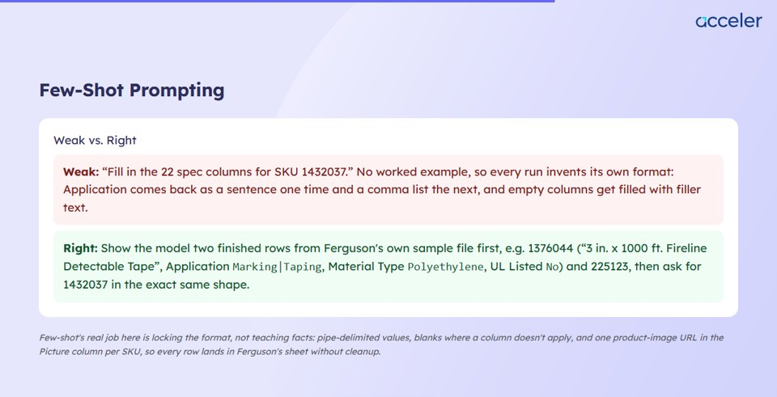
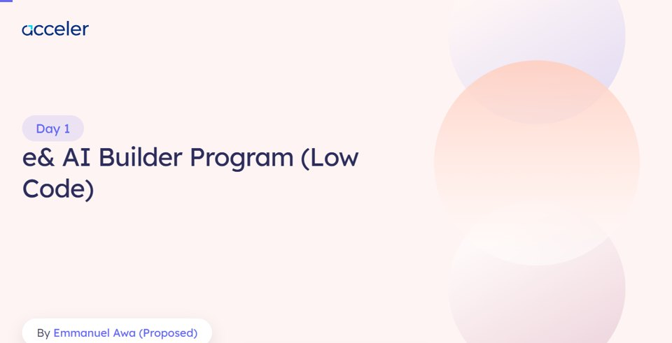
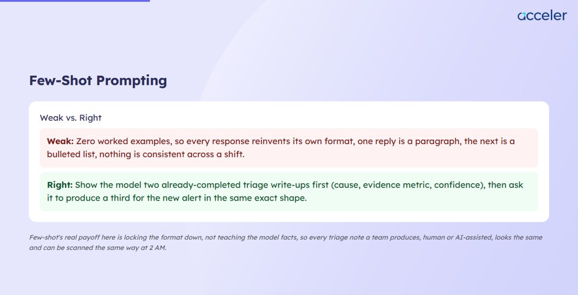
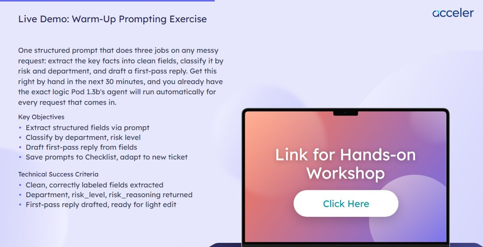
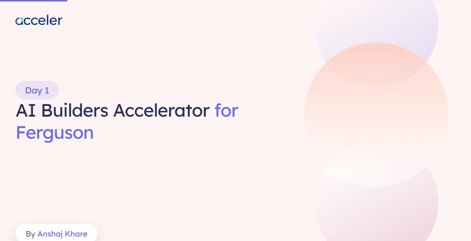

The acceler-post-sales Claude Code plugin picks up where pre-sales stops. Once a deal is signed, it turns what we already know about the client into everything a program needs: the onboarding form, the lesson plan, quizzes, demos, class decks, orientation and closing decks, assignments, and the recap and impact report after each session.
Two ideas run through all of it. First, nothing ships unchecked: every artifact goes to its own AI reviewer, and a person approves each fix before it is applied. Second, every step works on its own: you can run the whole pipeline for a new client, adapt one real past deck for a different client, or make a small change to something that already exists.
- The whole delivery pipeline, one command per stage. From discovery facts to the impact report, each with a matching reviewer.
- Three ways to run any step. Full build, adapt from a real past artifact, or a quick tweak. The plugin works out which one you mean from what you hand it.
- A start-up check before anything is built. It says which mode it is in, looks at what already exists for the client (on your laptop, then in Drive), and asks at most 3 to 5 questions.
- Session decks that match our real class decks. Built on the real e& template: same backgrounds, layouts and type sizes.
- Reviews that respect what you asked for. A deliberately short deck is not failed for slides nobody requested.
- Every reviewer has been tested. 20 test samples, each with a known problem planted in it, and all 20 were caught correctly.
What do you need to make?
If you build slides, demos and quizzes, this is your section. Pick the job, follow the recipe. Each one tells you what you need first, exactly what to type, what comes back, and where the file goes.
| Who usually does what | Stages | What this means for you |
|---|---|---|
| If you are planning the program | Discovery facts, onboarding form, deep research, lesson plan, instructor roster | By the time you start, a lesson plan for the client normally exists. If it does not, you can still work from a past deck, see recipe 3. |
| If you are building the content | Demo guides, slide plans, session decks, quizzes | The five recipes below. |
| If you are covering for someone | Any stage | Every stage is explained in Every stage explained, with what it needs and what to type. |
/acceler-post-sales: and choose), then type or paste the rest in plain English. Say the client name and the day number.
Two: the plugin starts by telling you which mode it is in and what it found for that client, and may ask up to 3 to 5 short questions. Answer them, and it builds.You need: The lesson plan for that day. Your screenshots of the demo, in order: paste them into Claude, or put them in one folder and name the folder. A few plain lines on what happened at each step. Rough notes are fine.
You get: A step-by-step guide learners can follow, as a web page, with your screenshots placed at the right steps and copy buttons on every prompt and code block. One guide per demo. If a day has two demos, run this twice.
Saved on your laptop: demo/day-1-demo-1/ in the client's outputs folder
Belongs in Drive: B2B AI Programs, under the day's Live Class / Demo folder
Time: Not measured yet. The review after it adds a few minutes.
The plugin never invents a screenshot. If a step needs one you did not give, it says so. It also checks no password is visible in any screenshot.
You need: The lesson plan, and that day's demo guide and quiz if they exist (the deck links to the demo and shows the quiz questions). Two commands, in this order.
You get: First a slide plan: what each teaching slide will say and show, for you to read and correct. Then the deck, built from that plan in our class-deck template: cover, instructor, timing, agenda, teaching slides, demo link, quiz, thank you. The deck reviewer runs on its own afterwards and asks which fixes to apply.
Saved on your laptop: slide-content-plan-day-1.md and session-deck/day-1/index.html
Belongs in Drive: the deck goes to B2B AI Programs, the slide plan to PostSalesPluginOutput
Time: Not measured yet for a full day. Plan for it to run while you do something else.
Why two steps: deciding the content first is what keeps the deck from turning into walls of text. Fix the plan, not the deck.
You need: The past deck, in any of these forms: a Google Slides link, a PowerPoint file, or a PDF. A few lines about the new client: who the learners are, which tools, the use case, which day. No lesson plan needed.
You get: It replies "Mode: Adapt", writes a short brief of what it understood and shows it to you, builds the deck in our template with the new client's examples, then runs the full review. At the end it lists what it could not carry over from the old deck, usually diagrams and screenshots.
Saved on your laptop: session-deck/day-1/index.html
Belongs in Drive: B2B AI Programs
Time: About 9 minutes for a 7-slide deck in a real run, including the review.
The old deck gives the content. Our template gives the look. You get a new deck, your old file is not edited. If the old deck has important diagrams, give the PDF or PowerPoint, a Slides link brings text only. More in Three ways to run a step.
You need: The lesson plan. Say which kind: the pre-test, the post-test, or the quiz for a given day. They are three different files.
You get: Questions that each test one objective from the lesson plan, with an explanation of why the right answer is right and why each wrong one is wrong. Pre-test and post-test come as 10 questions plus 2 written ones unless you ask for different numbers. The quiz reviewer runs afterwards.
Saved on your laptop: mcq/day-1-in-session.docx (or pre-test.docx, post-test.docx)
Belongs in Drive: PostSalesPluginOutput. Ask for a Google Form if you want one made.
Time: Not measured yet.
Make the day's quiz before the slide plan, so the deck can place each question right after the concept it tests.
You need: The file, and exactly what to change.
You get: It replies "Mode: Tweak", changes only what you asked, and confirms the change landed and nothing else moved. It also tells you if your change left something else out of step, for example a cover that now names a different instructor than slide 2.
Saved on your laptop: a copy next to the original, the original is left alone
Belongs in Drive: replace the file in the same Drive folder
Time: About a minute.
A tweak gets a quick check, not the full reviewer. If you want the full review as well, run deck-review, code-demo-review or mcq-review on the file afterwards.
When the result is not good enough
- 1Say what is wrong, in the same chat. "Slide 9 is too wordy, cut it to three bullets" works. Small changes are a tweak.
- 2If the same problem keeps coming back, tell Utkarsh or Tanmaya, with the client, the day, the command you ran, and what was wrong. Your fix only changes your own file. They add the repeat problem to the plugin as a rule, and after the next update it stops for everyone. Each run also saves a short note of what was fixed, see the run note.
- 3If the reviewer flagged something that is actually fine, tell it to ignore that finding, see Approving fixes. The finding is dropped from that review and your reason is saved in the run note.
Pre-sales wins the deal. Post-sales delivers it.
They are two plugins in the same repo, built to work as a pair. Both read from the same Knowledge Graph, so what we deliver matches what we sold, and nobody has to ask the client the same question twice.
- Scores the client brief against the discovery checklist
- Finds similar past deals
- Drafts the proposal and the pitch deck
- Works out pricing
- Suggests instructors
- Reads the discovery facts and the proposal, instead of asking again
- Builds the onboarding form, lesson plan and instructor roster
- Builds quizzes, demos and the class decks for each day
- Builds orientation, closing, assignments and the setup guide
- Builds the learner recap and stakeholder impact report after each session
The discovery facts (who the audience is, what success looks like, tools, timeline) and the proposal (what was promised, how many days, how many hours a day). Post-sales saves these as a Discovery Facts Sheet and every later stage checks its work against it.
The Knowledge Graph (past deals, programs, instructors) ships with pre-sales, and two post-sales steps use pre-sales tools directly: the discovery check at the very start and finding the right instructor for each day. So the rule is simple: always install both.
Sixteen stages, and what each one needs
This is the whole pipeline, so anyone can run any stage if the usual person is away. Click a stage to open it. Each one says what it does, what must exist first, what to type, and where the result goes.
The order, in one picture
- A full program for a new client runs A, then B, then C for each day. Each stage reads what the one before it produced.
- Group C repeats for every day. Day 1, then Day 2, and so on. Always say the day number.
- You can skip what a program does not need. A one-day masterclass may only need a deck, a quiz and a recap.
- You can start in the middle. With a past deck to adapt, you do not need A or B at all. The plugin writes a short brief in their place.
| To build | You need |
|---|---|
| A demo guide | The lesson plan, your screenshots |
| A quiz | The lesson plan |
| A slide plan | The lesson plan, that day's demo guide, the day's quiz if there is one |
| A deck, fresh | That day's slide plan |
| A deck, adapted | Only a past deck and a few lines about the new client |
Tested means the stage was run on a real program and reviewed. Built means it is in the plugin and next in testing. "Type" shows the command and an example of what to say after it.
A · Understand the client
Discovery checklist PlanningTested▾
Needs first: The proposal and discovery call notes. Nothing from this plugin.
Type:
/acceler-post-sales:discovery-checklist Ferguson. The proposal and call notes are in the Ferguson folder.You get: A score, a verdict, and the Facts Sheet that every later stage checks against. Below 50% it stops the pipeline until the gaps are filled.
Belongs in Drive: PostSalesPluginOutput (working file)
Real example: e& Low Code: it separated a real business outcome from the proposal's "success metrics", which only measured the training itself.
Onboarding form PlanningTested▾
Needs first: The Facts Sheet.
Type:
/acceler-post-sales:onboarding-form-generation FergusonYou get: The form as a Word file. Ask for a Google Form and it makes one.
Belongs in Drive: PostSalesPluginOutput (working file)
Real example: e&: a form that asks each learner what they want from the program, not only their tools and skill ratings.
Deep research PlanningTested▾
Needs first: The Facts Sheet, the proposal, the onboarding responses.
Type:
/acceler-post-sales:deep-research FergusonYou get: One research brief. A person reads and approves it, there is no separate reviewer for this stage.
Belongs in Drive: PostSalesPluginOutput (working file)
Real example: e&: it found that the real past program ran two demos on Day 1, a warm-up and a main build, which shaped the lesson plan.
B · Plan the program
Lesson plan PlanningTested▾
Needs first: The research brief and the proposal's day-by-day section.
Type:
/acceler-post-sales:lesson-plan-generation FergusonYou get: An Excel file, one tab per day. Everything in group C is built from it.
Belongs in Drive: PostSalesPluginOutput (working file)
Real example: Ferguson: a 4-day plan adapted from the e& Pro Code plan, 5 hours a day. One tab per day, plus an overview, 12 open questions to settle with the client, and the sources it used.
Instructor roster PlanningTested▾
Needs first: The approved lesson plan. The pre-sales plugin must be installed.
Type:
/acceler-post-sales:instructor-finalization FergusonYou get: A day-by-day roster. Every name is marked "Proposed" until a person confirms it.
Belongs in Drive: PostSalesPluginOutput (working file)
Real example: e&: Day 1 proposed an instructor who had already taught the same content to an earlier e& cohort.
C · Build each day's content
Demo guide BuildingTested▾
Needs first: The lesson plan. Your screenshots in order, and a few lines on each step.
Type:
/acceler-post-sales:demo-generation Ferguson, Day 1, the product spec agent demo. Screenshots are in the folder "Day 1 demo screenshots".You get: A web page guide with screenshots and copy buttons. For a code demo, the code is actually run first.
Belongs in Drive: B2B AI Programs (learners see it)
Real example: e& Day 1: two guides, a warm-up prompting exercise and an n8n agent build with 24 real screenshots. It worked out which screenshots belonged to which demo.
Quizzes BuildingTested▾
Needs first: The lesson plan.
Type:
/acceler-post-sales:mcq-generation Ferguson, in-session quiz for Day 1You get: A Word file with questions, the answer key, and an explanation for every option.
Belongs in Drive: PostSalesPluginOutput (working file). The questions reach learners through the deck or a form.
Real example: e&: a pre-test and post-test of 10 questions plus 2 written ones, and four daily quizzes of 6 questions each.
Slide plan BuildingTested▾
Needs first: The lesson plan, that day's demo guide, and the day's quiz if there is one.
Type:
/acceler-post-sales:slide-content-planning Ferguson 1 (client, then day number)You get: A plan you can read and correct in a few minutes. The deck is built from it.
Belongs in Drive: PostSalesPluginOutput (working file)
Real example: e& Day 1: a plan that places each quiz question right after the concept it tests.
Session deck BuildingTested▾
Needs first: That day's slide plan. Or, to adapt, only a past deck.
Type:
/acceler-post-sales:session-deck Ferguson, Day 1You get: A web page deck: cover, instructor, timing, agenda, teaching slides, demo link, quiz, thank you. Then the deck reviewer's findings.
Belongs in Drive: B2B AI Programs (learners see it)
Real example: e& Day 1: 54 slides. Ferguson: a 7-slide opening deck adapted from the e& deck in about 9 minutes.
D · After each session
Learner recap After each sessionBuilt▾
Needs first: What actually happened that day: the deck, the instructor's notes, the chat. It asks for these and does not guess.
Type:
/acceler-post-sales:session-recap Ferguson, Day 1 of 4. The deck and chat export are in the Day 1 folder.You get: A web page for learners.
Belongs in Drive: B2B AI Programs (learners see it)
Real example: The real LVT learner recaps are the model.
Impact report After each sessionBuilt▾
Needs first: The feedback export, the chat log, the transcript. Every quote has to be real.
Type:
/acceler-post-sales:session-impact-report Ferguson, Day 1. Feedback export and chat log attached.You get: A web page report, plus a short summary file.
Belongs in Drive: B2B AI Programs (learners see it)
Real example: The real LVT impact report is the model.
E · Once per program
Orientation deck Planning or buildingTested▾
Needs first: A real past Orientation deck as a PowerPoint file, and the lesson plan. Needs Python on the laptop.
Type:
/acceler-post-sales:orientation-generation Ferguson. Use the e& Low Code orientation deck as the base.You get: A real, editable PowerPoint file. A PDF only after you approve it.
Belongs in Drive: B2B AI Programs (learners see it)
Real example: e&: built from the real e& Low Code orientation deck, with Acceler branding swapped in.
Closing deck Planning or buildingBuilt▾
Needs first: A real past Closing deck as a PowerPoint file, and the lesson plan. Needs Python on the laptop.
Type:
/acceler-post-sales:closing-ceremony-generation Ferguson. Use the e& Low Code closing deck as the base.You get: An editable PowerPoint file.
Belongs in Drive: B2B AI Programs (learners see it)
Real example: The real e& Closing deck is the model.
Setup guide BuildingBuilt▾
Needs first: The lesson plan, and the list of tools.
Type:
/acceler-post-sales:hands-on-guide-generation FergusonYou get: A setup guide. It never contains a real password, only where to find one.
Belongs in Drive: B2B AI Programs (learners see it)
Real example: Our real VM and tools setup guides are the model.
Assignment BuildingBuilt▾
Needs first: The lesson plan.
Type:
/acceler-post-sales:assignment-generation Ferguson, Day 2You get: A Word file. If learners get a starter file, it says clearly what is given and what is graded.
Belongs in Drive: B2B AI Programs (learners see it)
Real example: The real e& Low Code capstone template is the model.
Project BuildingBuilt▾
Needs first: The lesson plan.
Type:
/acceler-post-sales:project-generation FergusonYou get: A project guide and grading rubric. Where a safety rule matters, the rubric checks the safeguard really blocked a bad attempt, not only that the end result looks right.
Belongs in Drive: B2B AI Programs (learners see it)
Real example: The real LVT "Stale Order Alerts" project is the model.
dry-run-feedback turns notes from a dry run into fixes, and pick-use-case builds a "pick your use case" page for build labs.Full build, adapt, or tweak
Real requests are rarely "build everything from scratch". Most are "make this one like that one" or "just fix this". You do not pick a mode: the plugin works it out from what you hand it, and tells you in its first line.
When: a new client, nothing exists yet.
How: built from this client's own facts, following the pipeline in order.
Check: full review by the matching reviewer, then your approval on each fix.
When: "here is the e& deck, make it for Ferguson."
How: keeps the proven template and structure, swaps in the new client's use case and examples.
Check: the same full review. Changing a deck for a new client is exactly where mistakes creep in.
When: "change the instructor on the cover", "add one slide".
How: changes only what you asked, keeps the original safe.
Check: a quick check that the change landed and nothing else moved. About a minute.
The start-up check, before anything is built
- 1It names the mode in one line, so you can see what it understood.
- 2It looks at what already exists for this client: first on your laptop, then in the client's Drive folders if nothing is found locally.
- 3It deals with what is missing. In a full pipeline run it stops and offers a choice: run the missing stage, or carry on with a short brief. When adapting, or building one artifact on its own, it writes a short light brief (facts, scope, objectives, assumptions) and shows it to you first.
- 4It asks only what it cannot work out, at most 3 to 5 questions. Everything else it assumes and flags clearly.
Handing over a past deck: which form?
All three work as a starting point. We tested each on a real deck. They do not give the plugin the same things.
| You hand over | What the plugin gets | What it misses |
|---|---|---|
| A Google Slides link | All the text, slide by slide. | Pictures, diagrams and layout. Speaker notes did not come through in testing. Needs Google Drive connected. |
| A PowerPoint file | All the text, the speaker notes, and the pictures as files. | Nothing important. |
| A PDF | The text, and it can see each slide, so it understands diagrams, screenshots and layout. | It cannot lift the pictures out as separate image files. |
- The old deck gives the content. Our template gives the look. You get a new deck in the class-deck template. Your Slides or PowerPoint file is not edited.
- Pictures do not come across on their own. At the end, the plugin lists every diagram and screenshot it could not carry over, slide by slide, so you can add them back.
- If the old deck has important diagrams, hand over the PDF or the PowerPoint, not the Slides link.
- The exception: Orientation and Closing decks really are edits of a PowerPoint file, and stay editable.
A real adapt run: the e& deck, rebuilt for Ferguson

Checked, fixed with your approval, and learned from
The agent that builds something never marks its own work. A separate reviewer checks it against written rules, a person approves each fix, a separate fixer applies only what was approved, and when the same mistake keeps coming back, Utkarsh or Tanmaya add it to the plugin as a rule.
One for each kind of artifact: discovery, onboarding form, lesson plan, quiz, demo, session deck, orientation, closing, assignment, project, setup guide, learner recap and impact report. Two more look at a whole session together: coherence (do the deck, demo and quiz agree with each other?) and audience fit (is it pitched at the level this cohort actually reported?).
A sixteenth agent, the fixer, is the only one allowed to edit, and only after you approve. It may never weaken a learning objective or a review rule to make a finding go away.
- Quizzes: five recurring question-writing mistakes are now permanent rules.
- Decks: a demo button linking to a guide that did not exist yet.
- Orientation: a leftover duplicate slide copied over from the source deck.
- Lesson plan: a day that added up to more hours than the proposal promised.
Approving fixes: what you actually type
When the reviewer finishes, it lists its findings with a number each and asks what to do. You answer in plain words. Nothing is changed until you do.
| You want to | Type something like | What happens |
|---|---|---|
| Accept some fixes | apply 1 and 3 | Only those are applied, then the reviewer checks them again. You can accept all, some, or none. |
| Understand a finding first | explain 2 | The reviewer shows its reasoning and the evidence, before you decide. |
| Ignore one that is fine as it is | resolve 4, that wording is what the client uses | The finding is dropped from this review. Your reason is saved in the run note. |
| Fix it yourself instead | Edit the file, then re-review | Only the affected check runs again on your edited file. |
So at the end of every run the plugin adds a few lines to
run-notes.md in the client's folder: what the reviewer found, what you changed by hand, what you told it to ignore, and what could not be carried over from an old deck.Upload it to PostSalesPluginOutput with your other working files. Utkarsh and Tanmaya read these notes and turn repeat problems into rules in the next update. Nobody else needs to change the plugin. In v2 this happens on its own.
Run a reviewer on its own
Every reviewer is also a command, for a quick check right after one thing is made:
deck-review,
mcq-review,
lesson-plan-review and so on.
Before a whole session goes to a client, run
content-review,
which runs the per-type reviewers and then the coherence and audience-fit checks across the bundle.
Formats, presenting, editing, exporting
If you are used to building in Google Slides, read this part. Some outputs are not the file type you might expect.
| Output | Comes as | How to open and use it | How to change it |
|---|---|---|---|
| Session deck | A web page (index.html) | Double-click to open in a browser. Arrow keys move between slides, F goes full screen, the full stop key shows speaker notes. Share your browser window in Zoom to present. | Ask the plugin for a tweak. That is the normal way. |
| Demo guide | A web page | Open in a browser. Learners follow it step by step and copy prompts with one click. | Ask for a tweak. |
| Quizzes | Word | Open in Word or Google Docs. Ask the plugin to make a Google Form from it. | Edit directly, or ask for a tweak. |
| Lesson plan | Excel | One tab per day. | Edit directly, or ask for a tweak. |
| Orientation and Closing decks | PowerPoint | A normal, editable file. Opens in PowerPoint or Google Slides. | Edit directly. |
| Recap and impact report | Web pages | Open in a browser, or share as a link once published. | Ask for a tweak. |
- The instructor's photo. Give the plugin a photo, or use an old PowerPoint deck as the reference and it takes the photo from there. A Slides link or a PDF cannot supply it. With no photo, the deck shows initials.
- Diagrams and screenshots from an old deck. The plugin lists what it could not carry over.
- Real links: the Zoom link, the lab link, the feedback form.
- Confirmed facts: session timings and the instructor's name, if they were not confirmed when the deck was built. The deck marks these as placeholders.
- Class decks use our real class-deck template: the same backgrounds, layouts and text sizes as the decks we deliver today.
- Acceler branding is the default. PowerUp is used only when someone asks for it. It is asked once per client, not every time.
- A different template is possible if you hand over a deck in that look and say so. It is not chosen for you.
What actually comes out the other end
Real outputs from real runs, not mockups. The screenshots below are from the e& AI Builder (Low Code) test run and the Ferguson adapt run. Live links will be added here once the sample pages are published.
e& AI Builder (Low Code), Day 1
54 slides in the real e& class-deck template, built from the lesson plan and slide content plan, then reviewed.

Teaching slides with real components
A "weak versus right" card from the prompt engineering section. The content was decided in the slide plan, the deck only renders it.

Demo hand-off, matching the real layout
What the demo builds, key objectives and success criteria on the left, the link to the learner's demo guide on the laptop.

Ferguson, adapted from the e& deck
A 7-slide Day 1 opening deck for a new client, in the same template, using Ferguson's own product data. Built and reviewed in about 9 minutes.

Also produced in the e& test run
| Output | What it is | Format |
|---|---|---|
| Discovery Facts Sheet | Audience, success measure, tools, constraints, branding | Markdown |
| Onboarding form | The learner form, tied to the program's goal | Word |
| Deep research brief | Everything known about the client and the closest past programs | Markdown |
| Lesson plan | Four day tabs, minute-level | Excel |
| Instructor roster | A proposed instructor for each day | Markdown |
| Pre-test and post-test | 10 questions plus 2 written ones each, with explanations | Word |
| Four daily quizzes | 6 questions each, placed in the deck after the concept they test | Word |
| Two Day 1 demo guides | Warm-up prompting exercise, and the n8n agent build with 24 real screenshots | Web page |
| Orientation deck | Edited from the real e& orientation deck | PowerPoint |
Get it running in about 10 minutes
You do this once. After that you only update when a new version ships. These steps use the Claude Desktop app. If you prefer a terminal, the same commands work there.
Before you start
| You need | Why | Needed for |
|---|---|---|
| Claude Desktop, signed in | It runs the plugin. Use the </> Code view inside it. | Everything |
| Git installed | Claude uses it to fetch the plugin from GitHub. | Installing and updating |
| Google Drive connected in Claude | So the plugin can read a Slides link you give it, and find work a colleague already uploaded. | Adapting from Slides, handovers |
| Python | Used to edit PowerPoint files. | Only Orientation and Closing decks, and PowerPoint exports |
| A work folder | Any folder on your laptop where you keep your B2B work. Your outputs will appear inside it. | Everything |
/acceler-post-sales: and a list of commands should appear. If it does, you are ready.
Go to Start here and pick your job./plugin, open the installed list and update both plugins.
Then restart Claude. This step matters: Claude runs the copy saved on your laptop, not the newest one on GitHub.
If you skip it, you keep running old rules and nothing tells you. The current version is 0.4.9.Good habits while you work
- 1Pick the command from the menu, so it turns into a blue label, then type or paste the rest. If you paste the whole line in one go, Claude treats it as pasted text and asks you to confirm first.
- 2Click the small arrow at the end of any step Claude shows, to open it and see what was done, including the reviewer's work.
- 3If Claude keeps saying it "cannot determine the safety" of an action, press Shift+Tab to switch to the mode where it asks you before each step.
Where files go, and how someone else picks up your work
Outputs are saved on your laptop first. Drive is where they are shared. In this version, uploading to Drive happens when a person does it or asks the plugin to. Automatic upload is planned for the next version.
Everything goes into a folder called Post-Sales Outputs inside the work folder you opened Claude in, one folder per client. The plugin tells you the full path each time it saves.
These files exist only on the laptop that made them, until someone puts them in Drive. (On a laptop that also holds a full copy of the plugin's code, they go to post-sales/Outputs/[Client]/ inside that copy instead.)
| Folder | What goes there |
|---|---|
| B2B AI Programs | What learners and clients see: decks, demos, orientation, closing, recaps |
| PostSalesPluginOutput | Working files: Facts Sheet, deep research, lesson plan, roster, slide plans, quizzes, run notes |
The two are kept apart on purpose. The Knowledge Graph reads B2B AI Programs as real delivered content, so a half-finished working file must never land there.
Today (v1) and next (v2)
| Today, v1 | Next, v2 | |
|---|---|---|
| Uploading to Drive | Each run ends with a list of the files it made and the Drive folder each belongs in. You upload them, or tell the plugin "push the Day 1 deck and demo to Drive" and it does. | Files upload on their own the moment they are made. |
| Picking up someone else's work | If your laptop has nothing for that client, the plugin looks in the client's Drive folders, tells you what it found and when it was last changed, and asks before using it. | Laptops and Drive stay in step automatically. |
| What you must remember | Upload your files, or ask the plugin to, before you hand over or go on leave. The plugin can only find what is in Drive. | Nothing to remember. |
Common snags, and what they actually mean
The plugin is behaving the old way, even though it was updated▾
/plugin marketplace update acceler-local, update both plugins, and restart Claude Code or Claude Desktop. This has happened to us: one laptop ran a two-week-old copy and none of the newer rules were in effect.I typed a command but the reviewer never ran▾
Claude asked me to confirm before doing what I pasted▾
My files were saved in an unexpected folder▾
Post-Sales Outputs/[Client]/ inside the folder you opened Claude in, and the plugin prints the full path when it saves. If they landed somewhere else, you are probably on an old version: update both plugins and restart Claude. Versions before 0.4.4 could save into a client's own folder.The reviewer failed my short deck for missing slides▾
It stopped and said an earlier stage is missing▾
"Auto mode cannot determine the safety of..." keeps appearing▾
Can I get the deck as Google Slides?▾
The pictures from my old deck are missing in the new one▾
The reviewer flagged something that is fine▾
resolve and the finding's number, with a short reason. The finding is dropped from this review and your reason is saved in the run note. If the same wrong flag keeps showing up, tell Utkarsh or Tanmaya, the rule itself may need changing.Can I install only the post-sales plugin?▾
Do I have to run all sixteen stages?▾
A short glossary
| Word | What it means here |
|---|---|
| Plugin | An add-on for Claude that gives it our commands, rules and reviewers. |
| Command | What you type to start a job. It begins with /acceler-post-sales:. |
| Stage | One step of the pipeline, for example "lesson plan" or "session deck". Each has one command. |
| Mode | How a step is being run: full build, adapt, or tweak. The plugin works it out and tells you. |
| Discovery Facts Sheet | A one-page record of what we know about the client: learners, the goal, tools, constraints, branding. |
| Deep research | One brief that pulls together everything known about the client and the closest past programs. |
| Lesson plan | The internal, minute-by-minute plan for each day. Not shown to learners. |
| Slide plan | A list of what each teaching slide will say and show, written before the deck is built. |
| Light brief | A short note the plugin writes when there is no lesson plan to work from: what it understood, the scope you asked for, and what it assumed. |
| Reviewer | A separate AI checker for one kind of output. It can find problems and suggest fixes. It cannot change your file. |
| Finding | One problem a reviewer reports, with the evidence and a suggested fix. |
| Fixer | The only part allowed to edit a file, and only for fixes you approved. |
| Knowledge Graph | Our searchable map of past deals, programs, instructors and content. It comes with the pre-sales plugin. |
| Marketplace | Claude's word for the place a plugin is installed from. Ours is the GitHub source you add in setup. |
What shipped, and what's next
Version 1 is about getting every stage built, checked and usable on its own. Version 2 is about the system running more of itself, and more people being able to improve it safely.
In this version
Sixteen stages, each with its own reviewer and a human-approved fix loop, usable as one flow or one step at a time.
Ten stages are tested on e& Low Code Day 1 and on a Ferguson adapt run. Next, the whole pipeline is run once on a real past program, from discovery facts to the impact report, and each step is compared with what was actually delivered.
Next version (v2)
Today the reviewer test cases are run by hand. Next, they run on their own after every change: findings make the test cases stronger, the fixes go back into both the skill that builds and the skill that reviews, and the loop repeats without anyone driving it.
One place that records every test run and every improvement made to a skill, visible to the whole team. Today an improvement lives on one person's laptop until it is pushed.
Today a person performs the demo and hands over screenshots. Next, the agent runs the demo itself on a local machine, logs in, builds it, and captures its own screenshots.
A clear way to propose and review changes, a named stable version, and an automatic check that one person's change does not break something else. Also a path for good B2C improvements to flow back into B2B.
Files upload the moment they are made, to the right folder, and every laptop stays in step with Drive. No remembering to upload before a handover.
Every program and module carrying its real file link, and large decks no longer skipped, so deep research can find real past content on its own.
Hosted as web pages that open in a browser, instead of files passed around.
Microsoft Forms alongside Google Forms. One "do everything" command for the whole pipeline. Test cases for the building skills, not only the reviewers. Running in web sessions.